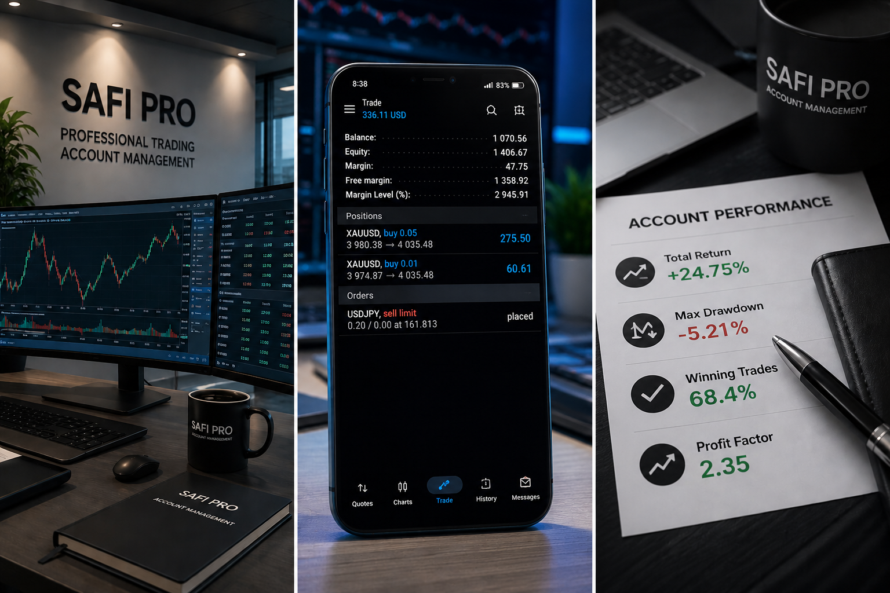

Professional Forex Account Management focused on capital protection, disciplined risk management and sustainable long-term account growth.
Get StartedYears Experience
Managed Accounts
Countries
Client Satisfaction
We provide professional Forex account management solutions for investors who seek access to financial markets without the need to trade independently. Our focus is on disciplined execution, capital preservation and long-term account growth.
Using advanced market analysis, risk management techniques and proven trading methodologies, we aim to help clients pursue consistent opportunities while maintaining responsible exposure to market volatility.
Professional management of investor trading accounts using structured trading strategies and risk-controlled execution.
Capital protection through disciplined money management, drawdown control and predefined risk parameters.

Portfolio diversification and investment supervision designed to support sustainable account growth.
Protecting investor capital remains our highest priority through disciplined risk management.
Clients receive regular updates and transparent reporting on account performance.
Trading decisions are supported by technical analysis, market research and risk evaluation.
Trading account management is a professional service where experienced traders manage investor accounts according to predefined strategies and risk management rules.
Read More Questions →Discover how professional Forex account management and disciplined risk control can support your long-term investment goals.
Contact Us